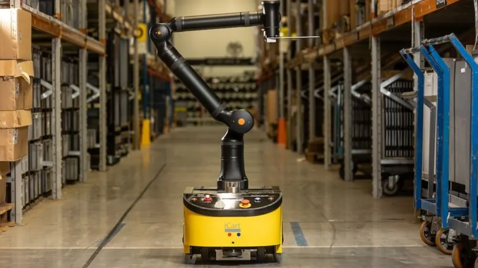
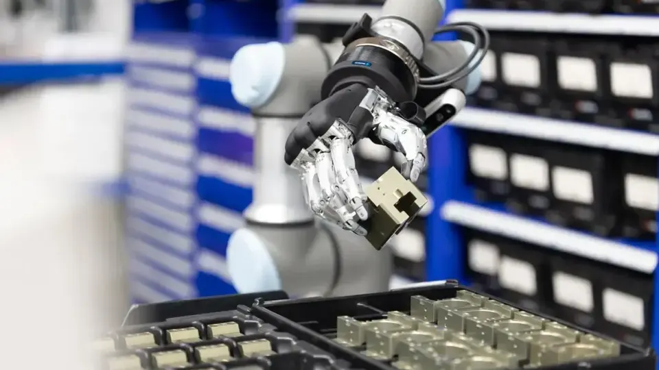

a16z leads Eka Robotics' Series A: a Vision-Force-Action model that lets robot hands feel contact
- Who: Eka Robotics, a physical-AI startup; Andreessen Horowitz leads the round, announced in a post by partner Yoko Li and managing partner Raghu Raghuram.
- What: a Series A financing, announced October 20, 2026 (no dollar figure disclosed).
- The technology: a Vision-Force-Action (VFA) model combining visual perception with force feedback from robotic hands; model, sensing, controller, and hardware are designed together.
- The claim: up to 1,500 picks per hour in laboratory induction and bin-picking — two and a half times faster than humans — across fragile objects, slippery industrial parts, and contact-rich insertion tasks.
- The founders: Pulkit Agrawal (Improbable AI Lab, MIT CSAIL) and Tuomas Haarnoja (co-created Soft Actor-Critic at Berkeley; formerly Google DeepMind).
- The bet: "We believe solving dexterous manipulation is one of the largest opportunities in robotics."
Andreessen Horowitz on Tuesday announced it is leading the Series A in Eka Robotics, a startup building what it calls a "Vision-Force-Action" model for dexterous robotic manipulation. The bet, laid out in a post by a16z partner Yoko Li and managing partner Raghu Raghuram, is that the next major frontier in robotics isn't machines that see and understand the world — it's machines that can physically interact with it, adapt to it, and perform reliably at economically meaningful speed.
That framing cuts against a year of robotics funding dominated by robot "brains" trained on internet video. Eka's argument: vision and language models can tell a robot what to do, but the information that matters during contact — is one edge caught? is the connector beginning to bind? — exists only in the sense of touch. Unite.AI notes no dollar figure for the round has been disclosed.
Vision plus force
Eka's Vision-Force-Action model combines visual perception with force feedback from its robotic hands — and, rather than treating the model, sensing, controller, and hardware as independent systems, the company designs them together so the robot can use physical contact itself as information. A grasp that starts to slip can be corrected. Contact with a surface can help locate an object. Resistance during insertion can change the robot's motion rather than simply trigger an error. The goal: preserve performance as conditions change without requiring an engineer to retune the robot for every material, object, or fit.
The announcement grounds the approach in the human hand — called the most economically important machine ever built, with roughly two dozen degrees of freedom and thousands of specialized sensory receptors detecting sustained pressure and shape, light touch, the first signs of slip, high-frequency vibration, and the stretching of skin. Rebuilding that receptor by receptor would add enormous complexity, cost, wiring, and failure points; Eka's engineering problem is to give machines enough physical information and intelligence to reach the same outcome with far simpler sensing and actuation.
Learning from physics, not just demonstrations
Much of modern robotics learns policies from human demonstrations. Eka instead trains manipulation policies through reinforcement learning in physics simulation, where virtual robots practice millions of variations in object position, friction, and contact before a policy ever reaches physical hardware. The claimed payoff is structural: "robot experience can increasingly scale with compute rather than human labor" — and simulated robots can practice failure modes humans rarely demonstrate, and learn to recover from them.
The announcement doesn't hide the hard part. Contact dynamics are notoriously difficult to model, and small errors in friction, compliance, or actuator behavior can turn a successful simulated policy into a useless real-world one. Closing the sim-to-real gap, the post says, has been one of robotics' hardest problems — and it is the problem Eka's founders have spent much of the last decade attacking.

1,500 picks an hour — and the people behind it
Eka's headline number: up to 1,500 picks per hour in laboratory induction and bin-picking tasks, two and a half times faster than humans. The underlying system, per the post, has demonstrated manipulation across fragile objects, slippery industrial parts, and contact-rich insertion tasks. The company names the next test itself: sustaining that performance through full production shifts.
The founders give the claim weight. Pulkit Agrawal of MIT CSAIL's Improbable AI Lab is described as a leading robot-learning researcher and a pioneer in computational sensorimotor learning — force-aware control, dexterous manipulation, and moving policies from simulation into the real world. Tuomas Haarnoja co-created Soft Actor-Critic at Berkeley, one of the foundational algorithms in modern reinforcement learning, and later worked at Google DeepMind training complex humanoid behaviors in simulation and deploying them on real machines. The broader team comes from MIT, Berkeley, Harvard, CMU, BU, UPenn, DeepMind, Microsoft, and Boston Dynamics.

Why it matters
Industrial automation has a simple scoreboard — units per hour, error rates, uptime, cost per unit — and today, many automation projects make sense only when the volume of a task justifies the engineering required to constrain the environment and tune the robot. Every new object, material, or process can become another integration project. A robot that adapts to variation changes the equation: manufacturers could introduce new products without starting the learning process from scratch, and tasks that were never worth a dedicated automation project become addressable.
That is the economics of the bet a16z just placed. "We believe solving dexterous manipulation is one of the largest opportunities in robotics," the firm wrote — "and we couldn't be more excited to lead Eka Robotics' Series A."
Frequently asked questions
What is Eka's Vision-Force-Action model?
A model that combines visual perception with force feedback from robotic hands, with the model, sensing, controller, and hardware designed together rather than as independent systems. Instead of treating contact as an error, the robot uses it as information: a slipping grasp can be corrected, contact with a surface can help locate an object, and resistance during insertion can change the robot's motion. The goal is performance that survives variation without an engineer retuning the robot for every material, object, or fit.
Who founded Eka Robotics?
Pulkit Agrawal of MIT CSAIL's Improbable AI Lab, a robot-learning researcher working on force-aware control and dexterous manipulation, and Tuomas Haarnoja, who co-created Soft Actor-Critic at Berkeley — one of the foundational algorithms in modern reinforcement learning — and later trained humanoid behaviors in simulation at Google DeepMind, deploying them on real machines. Andreessen Horowitz describes the pair as unusually well suited to closing the sim-to-real gap.
What performance does Eka claim?
Up to 1,500 picks per hour in laboratory induction and bin-picking tasks — two and a half times faster than humans — with demonstrated manipulation across fragile objects, slippery industrial parts, and contact-rich insertion tasks. Eka names the next test itself: sustaining that performance through full production shifts.